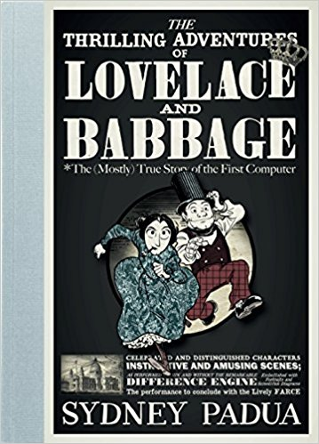
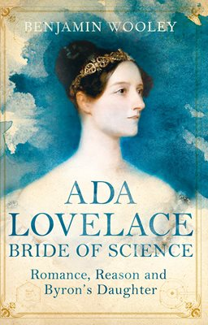

| Source | Image |
|---|---|
| Padua, Sydney. The Thrilling Adventures of Lovelace and Babbage *The (Mostly) True Story of the First Computer. Pantheon Books, 2015. |  |
| Woolley, Benjamin. The Bride of Science: Romance, Reason and Byron's Daughter. Pan Books, 2015. |  |